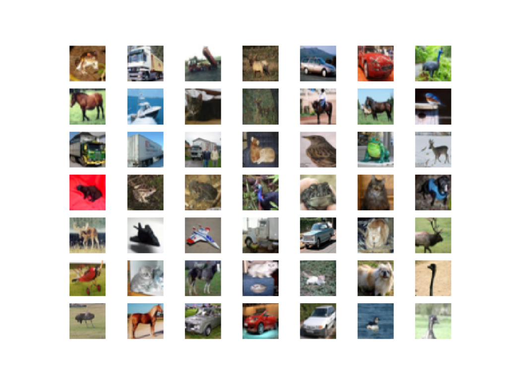
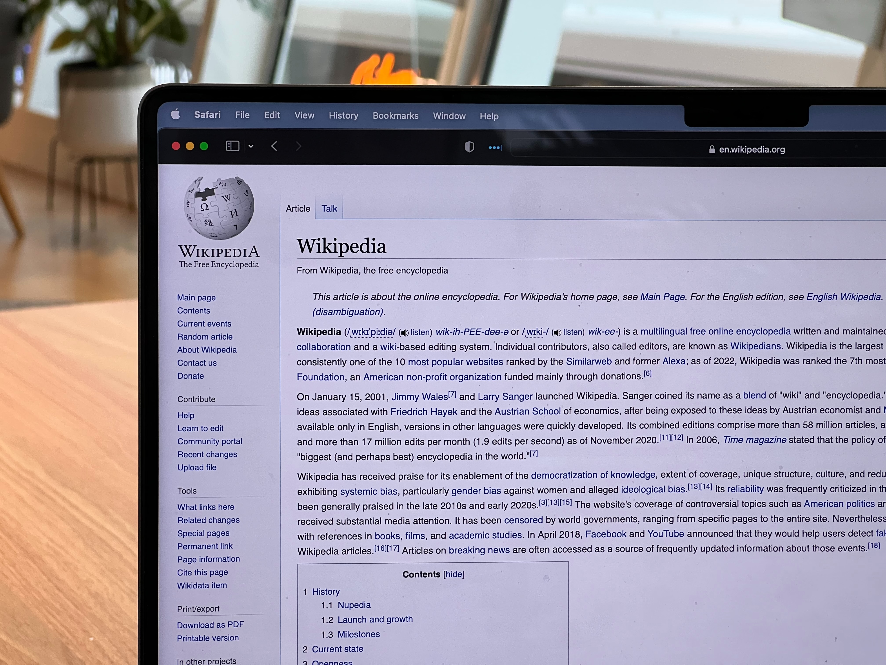

In today's highly competitive market, it is essential for businesses to understand their
customers and tailor their marketing efforts accordingly.
This project, involves using exploratory data analysis and an unsupervised machine learning
technique to analyze customer data and segment customers based on their purchase behavior and
loyalty rating. By doing so, we can understand our customers better, and develop targeted
marketing strategies that drive growth and revenue.
.

In this project, we create a streamlit app that can segment digits and operators to perform basic
math calculations.
*Please wait a few minutes for the app to boot.

In this project, we create an app that can predict salary based on job title, degree, major,
industry, and years of experience.
*Please wait a few minutes for the app to boot.
In this project, we create LSTM, GRU, & Seq-2-Vec/Seq-2-Seq CONV-LSTM models capable of
predicting future oil production rates.

In this project, we compare the performance of three (3) convolutional neural network models
trained without image augmentation, with image augmentation, and with transfer learning.

In this project, we perform comprehensive feature engineering to create useful features that can
be used to predict the results of a Premier League match, as well as the final seaon table using
a multioutput regressor.
In this project, we create a classification model that can accurately predict the satisfaction
levels of airline passengers. Additionally, we delve into the concept of precision/recall
trade-off, its implementaion, and how it applies to various business scenarios that require
higher precision or recall.
In this project, we create a binary classifier with a high recall that can predict if a patient
has breast cancer.

In this project, we create a wikipedia text summarizer using nltk and a word frequency table.